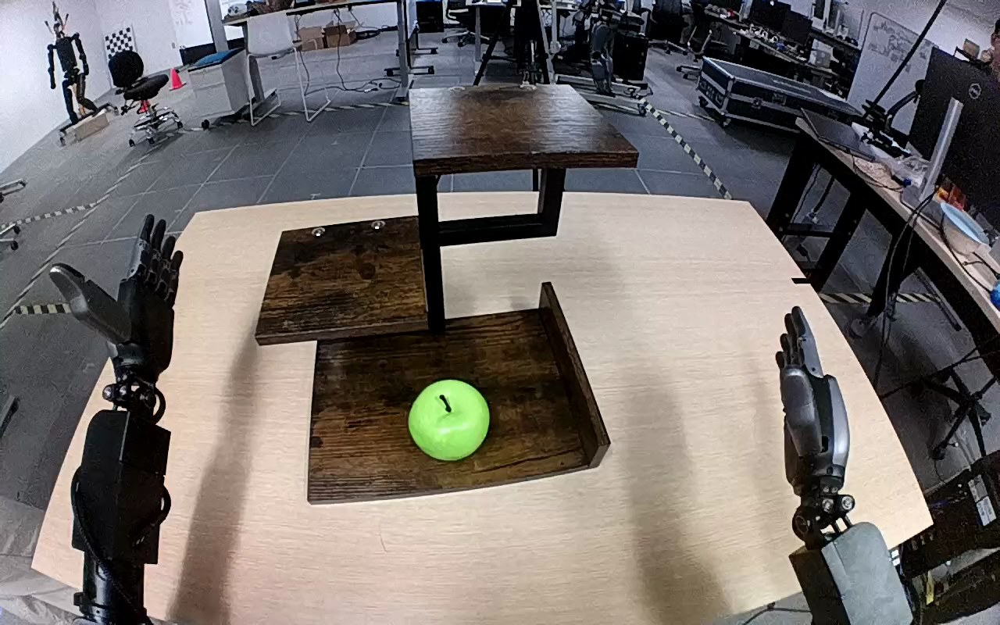

NVIDIA GR1 · 19
Video 19

Visual review action_review.json
{
"prompt_protocol": "humanoid_action_v1",
"prompt_provenance": "visually_authored_from_video_and_initial_frame",
"reviewed_contact_sheets": [
"sheet_001.jpg"
],
"inspected_frame_stride": 2,
"inspected_sampled_frame_count": 60,
"initial_scene": "A green apple rests upright on the lowest/front wooden shelf. The empty top shelf is elevated behind it. Both robot forearms enter from the near lower edge; the hand on the right is initially open, and the hand on the left is open and inactive.",
"observed_sequence": [
{
"start_frame": 0,
"end_frame": 18,
"action": "Both hands remain open while the green apple rests on the bottom shelf.",
"confidence": "high"
},
{
"start_frame": 19,
"end_frame": 40,
"action": "The right hand moves inward to the apple, bringing its thumb below/along the near side and fingers to the far/right side. The apple remains on the bottom shelf.",
"confidence": "high"
},
{
"start_frame": 41,
"end_frame": 62,
"action": "The right hand closes around the apple, securing it between the thumb and opposing fingers while it remains at the shelf surface.",
"confidence": "high"
},
{
"start_frame": 63,
"end_frame": 88,
"action": "The right hand lifts the apple clear of the bottom shelf and raises it along the right side of the shelf structure toward the top shelf. The left hand remains open without contact.",
"confidence": "high"
},
{
"start_frame": 89,
"end_frame": 106,
"action": "The right hand carries the apple over the top shelf and lowers it to the shelf surface.",
"confidence": "high"
},
{
"start_frame": 107,
"end_frame": 119,
"action": "The right hand opens around the upright apple and begins lifting away. The apple remains resting upright on the top shelf at the last frame.",
"confidence": "high"
}
],
"arm_hand_roles": {
"right": "Active manipulation hand: closes its thumb and fingers around the apple, lifts and transports it from the bottom shelf to the top shelf, lowers it, opens and starts lifting clear.",
"left": "Open, inactive hand; remains to the left of the shelf without touching the apple or shelf.",
"coordination": "Single-hand transfer. No hand-to-hand transfer, bilateral support, person interaction, or locomotion is visible."
},
"anatomical_side_evidence": {
"convention": "Robot-relative anatomy, rather than treating image position alone as side evidence.",
"evidence": "The manipulating forearm runs continuously from the lower-right near-camera robot-side region to the hand. The forward-facing, near-robot view shows the back of that hand and its thumb on the medial/image-left side. The opposite forearm enters from the lower-left and exposes its palm with its thumb toward the outer/image-left side. These mirrored thumb/palm orientations support identification of the active hand as anatomical right, consistent with the source instruction.",
"confidence": "moderate",
"limitation": "The torso and shoulder attachments are outside the camera view; side assignment relies on forearm continuity and mirrored hand geometry rather than visible shoulders."
},
"terminal_state": "The green apple is upright and resting on the top shelf. The right hand is open above/beside it and starting to lift away; the left hand remains open and inactive.",
"uncertainties": [
"Torso and shoulder attachments are outside view; anatomical right is supported by forearm entry direction and mirrored thumb/palm geometry, with moderate confidence."
],
"annotation_discrepancies": [],
"evidence_frame_indices": [
0,
32,
60,
68,
84,
96,
108,
119
],
"selected_execution_status": "success",
"video_id": "19",
"dataset": "NVIDIA_GR1_100",
"dedicated_review_agent": "review_gr1_19",
"review_source_video": "NVIDIA_GR1_100/19/original/original.mp4",
"source_frame_count": 120,
"source_fps": 20.0,
"native_detail_frames": [
32,
60,
68,
84,
96,
108,
119
],
"world_model_prompt": "The robot closes its right hand around the green apple on the bottom shelf and lifts it clear. It carries the apple upward to the top shelf, lowers it onto the shelf, and opens its hand, leaving the apple upright as the hand lifts away. Keep the camera fixed; preserve robot geometry, physically valid joint motion, and normal gripper opening and closing.",
"original_task_instruction": "Use the right hand to pick up green apple from bottom shelf to top shelf.",
"selected_segment": {
"start_frame": 0,
"end_frame_exclusive": 120,
"reason": "Complete original single-task reference; no cropping or trimming requested."
},
"source_video_sha256": "b4ff94b4b25eb52ac5fc4ca8113263826cec9eb8508822c8c62edc48aa772b2b",
"review_completed_at": "2026-10-13T17:47:28.229802+00:00"
}